<!DOCTYPE html>
<html>

<head><meta name="generator" content="Hexo 3.8.0">
  <meta charset="utf-8">
  
  <title>2018年の遠征を振り返る【前編】 | ほしよみ大学生のブログ</title>
  <meta name="viewport" content="width=device-width">
  <meta name="description" content="注意: この記事は過去の記事を移行したものです． あいさつさて，先日からブログを初めたはいいものの，まだまだ自分の天文へののめり込み具合は「浅い」わけで，書くネタが思い浮かばず困っています笑年末ということで，とりあえず今年の遠征を前後編に分けて振り返ってみようかなあと思います．とりあえず7月分までです！ 1/31 皆既月食今年は初っ端から，結構大きな天文イベントがあり，1/31には皆既月食がありま">
<meta name="keywords" content="写真,天体写真,遠征記">
<meta property="og:type" content="article">
<meta property="og:title" content="2018年の遠征を振り返る【前編】">
<meta property="og:url" content="http://dabokun.github.io/2018/12/31/00000002-review-outing-2018/index.html">
<meta property="og:site_name" content="ほしよみ大学生のブログ">
<meta property="og:description" content="注意: この記事は過去の記事を移行したものです． あいさつさて，先日からブログを初めたはいいものの，まだまだ自分の天文へののめり込み具合は「浅い」わけで，書くネタが思い浮かばず困っています笑年末ということで，とりあえず今年の遠征を前後編に分けて振り返ってみようかなあと思います．とりあえず7月分までです！ 1/31 皆既月食今年は初っ端から，結構大きな天文イベントがあり，1/31には皆既月食がありま">
<meta property="og:locale" content="ja">
<meta property="og:image" content="http://dabokun.github.io/2018/12/31/00000002-review-outing-2018/card.jpg">
<meta property="og:updated_time" content="2019-05-16T14:09:59.358Z">
<meta name="twitter:card" content="summary">
<meta name="twitter:title" content="2018年の遠征を振り返る【前編】">
<meta name="twitter:description" content="注意: この記事は過去の記事を移行したものです． あいさつさて，先日からブログを初めたはいいものの，まだまだ自分の天文へののめり込み具合は「浅い」わけで，書くネタが思い浮かばず困っています笑年末ということで，とりあえず今年の遠征を前後編に分けて振り返ってみようかなあと思います．とりあえず7月分までです！ 1/31 皆既月食今年は初っ端から，結構大きな天文イベントがあり，1/31には皆既月食がありま">
<meta name="twitter:image" content="http://dabokun.github.io/2018/12/31/00000002-review-outing-2018/card.jpg">
<meta name="twitter:creator" content="@dabo_pic">
  <meta property="og:image" content="/images/favicon.png">
  
  <link rel="alternative" href="/atom.xml" title="ほしよみ大学生のブログ" type="application/atom+xml">
  
  
  <link rel="icon" href="/images/favicon.png">
  
  <link rel="stylesheet" href="/css/style.css">
  <!--[if lt IE 9]><script src="//html5shiv.googlecode.com/svn/trunk/html5.js"></script><![endif]-->
  
</head></html>
<body>
  <div id="container">
    <div class="mobile-nav-panel">
	<i class="icon-reorder icon-large"></i>
</div>
<header id="header">
	<h1 class="blog-title">
		<a href="/">ほしよみ大学生のブログ</a>
	</h1>
	<nav class="nav">
		<ul>
			<li><a href="/">Home</a></li><li><a href="/categories">Categories</a></li><li><a href="/tags">Tags</a></li><li><a href="/archives">Archives</a></li><li><a href="/about">About</a></li><li><a href="/work">Work</a></li>
			<li><a id="nav-search-btn" class="nav-icon" title="Search"></a></li>
			<li><a href="https://github.com/dabokun"></a>
			</li>
			<li><a href="https://twitter.com/dabo_pic"></a></li>
			<li><a href="/atom.xml" id="nav-rss-link" class="nav-icon" title="RSS Feed"></a>
			</li>
		</ul>
	</nav>
	<div id="search-form-wrap">
		<form action="//google.com/search" method="get" accept-charset="UTF-8" class="search-form"><input type="search" name="q" class="search-form-input" placeholder="Search"><button type="submit" class="search-form-submit">&#xF002;</button><input type="hidden" name="sitesearch" value="http://dabokun.github.io"></form>
	</div>
</header>
    <div id="main">
      <article id="post-00000002-review-outing-2018" class="post">
	<footer class="entry-meta-header">
		<span class="meta-elements date">
			<a href="/2018/12/31/00000002-review-outing-2018/" class="article-date">
  <time datetime="2018-12-31T09:56:00.000Z" itemprop="datePublished">2018-12-31</time>
</a>
		</span>
		<span class="meta-elements author">astr0dab0</span>
		<div class="commentscount">
			
			<a href="http://dabokun.github.io/2018/12/31/00000002-review-outing-2018/#disqus_thread" class="article-comment-link">Comments</a>
			
		</div>
	</footer>
	
	<header class="entry-header">
		
  
    <h1 class="article-title entry-title" itemprop="name">
      2018年の遠征を振り返る【前編】
    </h1>
  

	</header>
	<div class="entry-content">
		
		
		<div id="toc" class="toc-article">
			<p class="toc-title">目次</p>
			<ol class="toc"><li class="toc-item toc-level-3"><a class="toc-link" href="#あいさつ"><span class="toc-number">1.</span> <span class="toc-text">あいさつ</span></a></li><li class="toc-item toc-level-3"><a class="toc-link" href="#1-31-皆既月食"><span class="toc-number">2.</span> <span class="toc-text">1/31 皆既月食</span></a></li><li class="toc-item toc-level-3"><a class="toc-link" href="#3-24-あいあい岬"><span class="toc-number">3.</span> <span class="toc-text">3/24 あいあい岬</span></a></li><li class="toc-item toc-level-3"><a class="toc-link" href="#4-22-朝霧高原"><span class="toc-number">4.</span> <span class="toc-text">4/22 朝霧高原</span></a></li><li class="toc-item toc-level-3"><a class="toc-link" href="#5-11-清里"><span class="toc-number">5.</span> <span class="toc-text">5/11 清里</span></a></li><li class="toc-item toc-level-3"><a class="toc-link" href="#5-22-岡山天体物理観測所"><span class="toc-number">6.</span> <span class="toc-text">5/22 岡山天体物理観測所</span></a></li><li class="toc-item toc-level-3"><a class="toc-link" href="#7-14-美ヶ原"><span class="toc-number">7.</span> <span class="toc-text">7/14 美ヶ原</span></a></li></ol>
		</div>
		
		<p><strong>注意: この記事は過去の記事を移行したものです．</strong><br><br><br></p>
<h3 id="あいさつ"><a href="#あいさつ" class="headerlink" title="あいさつ"></a>あいさつ</h3><p>さて，先日からブログを初めたはいいものの，まだまだ自分の天文へののめり込み具合は「浅い」わけで，書くネタが思い浮かばず困っています笑<br>年末ということで，とりあえず今年の遠征を前後編に分けて振り返ってみようかなあと思います．とりあえず7月分までです！</p>
<h3 id="1-31-皆既月食"><a href="#1-31-皆既月食" class="headerlink" title="1/31 皆既月食"></a>1/31 皆既月食</h3><p>今年は初っ端から，結構大きな天文イベントがあり，1/31には皆既月食がありましたね！この日は私の誕生日であり，坂本真綾の「CLEAR」発売日だった（※私は坂本真綾の大ファンです）ことも印象的です．多くの方が撮影されていましたが，私もこの日は（家の近所ではありますが）撮影しました．食の後半は曇ってしまって撤収しましたが，前半～皆既時刻まではよく晴れていてよかったです．1月なのもあって，軽い防寒だと標高が低くても3時間も外に出ていると凍えるぐらい寒い…今年はあまりガチ防寒が必要な遠征地に行ってないので，来年は行きたいなあ…</p>
<p>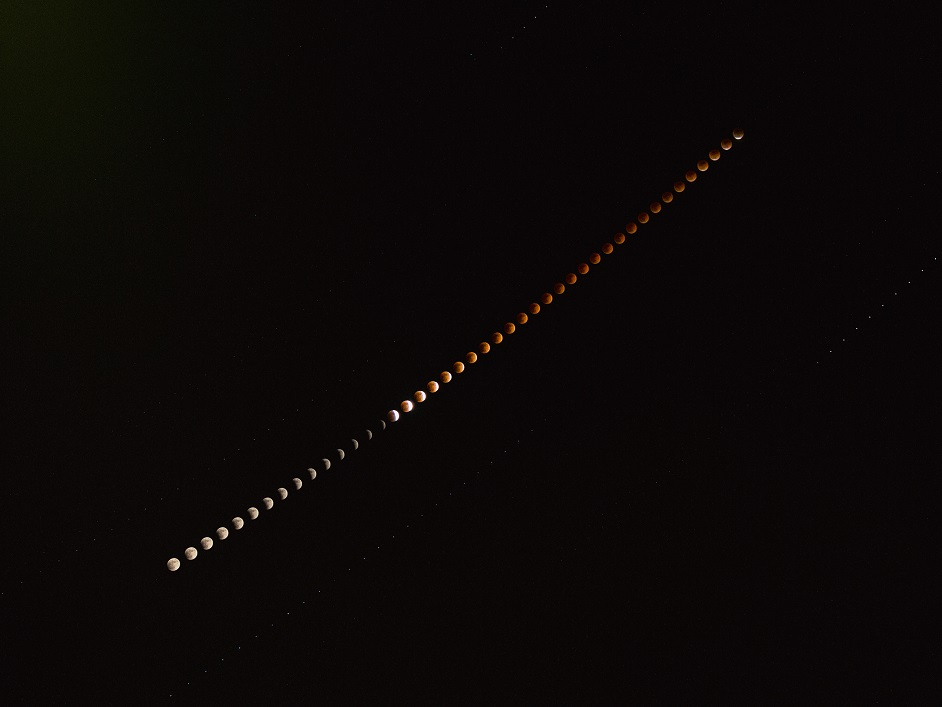</p>
<a id="more"></a>
<p>曇るまでの皆既月食をひたすら露光．事前にシミュレーションしていないので最広角(24mm)で撮っており，解像度は高くないですが欠けていく様子がわかってとてもおもしろいです．</p>
<h3 id="3-24-あいあい岬"><a href="#3-24-あいあい岬" class="headerlink" title="3/24 あいあい岬"></a>3/24 あいあい岬</h3><p>静岡県の南端，あいあいです．今年はモニュメントや階段に電飾がなされる！？ということで天文界隈に大きな衝撃が走った地でもありました（今はどうなってるのかな？）．天気的に行けそうなのがここ！ということで，社会人の方やサークルの後輩とともに行きました．ここから眺める夕日は最高！70-200を使って高台からモニュメント側をパシャリ．<br>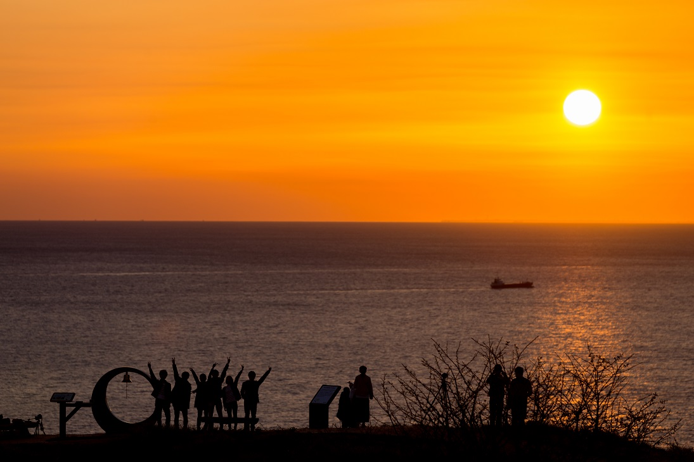</p>
<p>夕日にシルエットがとても映えますね．<br>夜は海風が激しく，15～20m/sくらいの風が常時吹きっぱですが，意外とポタ赤でも撮影ができて感動．<br>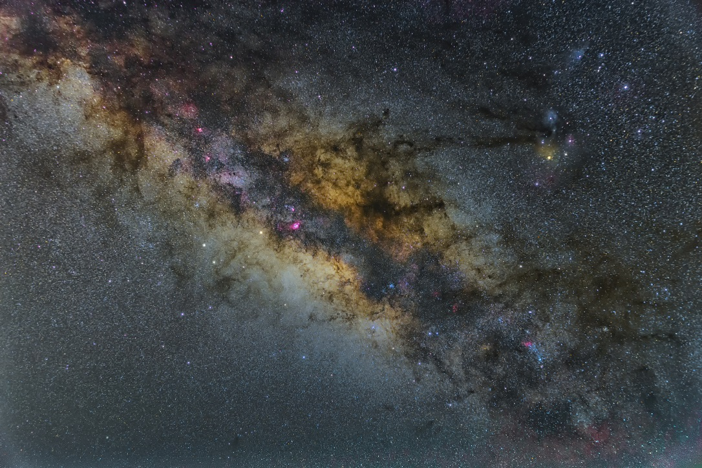</p>
<p>35mmでの撮影です．右側の星像がイマイチなのがちょっと残念ですが，さすがはあいあい．南が映るわ映るわ．<br>もう一枚．<br>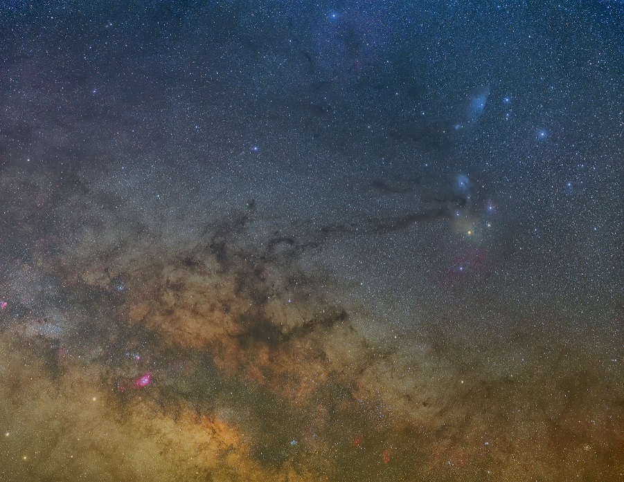</p>
<p>70mmでのモザイクに初挑戦！(爆風の中やるものではなかった笑)さすがはモザイク．当たり前ではありますが高画素で端まで綺麗な星像になる！<br>風はめちゃくちゃ恐怖ですが，来年も行きたいですね．</p>
<h3 id="4-22-朝霧高原"><a href="#4-22-朝霧高原" class="headerlink" title="4/22 朝霧高原"></a>4/22 朝霧高原</h3><p>人生初の朝霧高原！といっても，この日は天体観測がメインではなく，アニメ「ゆるキャン」のスタンプラリーが目的．学部の友人とともに，朝霧～本栖湖～南部町を友人の車の代車（マークX）で移動．夜は朝霧アリーナで過ごしたという次第です．このスタンプラリー，「ゆるくない」と謳っているだけあってめちゃくちゃ大変．全部集め終わるまでに7時間ほど要しました…．結局，スタンプを集めるだけ集めて，集めると応募できる景品？に応募するのをすっかり忘れていたのですが…．富士山をぐるっとまわったので到着はかなり遅い時間になりましたが，夜はよく晴れていて，観測中の方にミューロンで惑星を見せていただいたりしました．<br>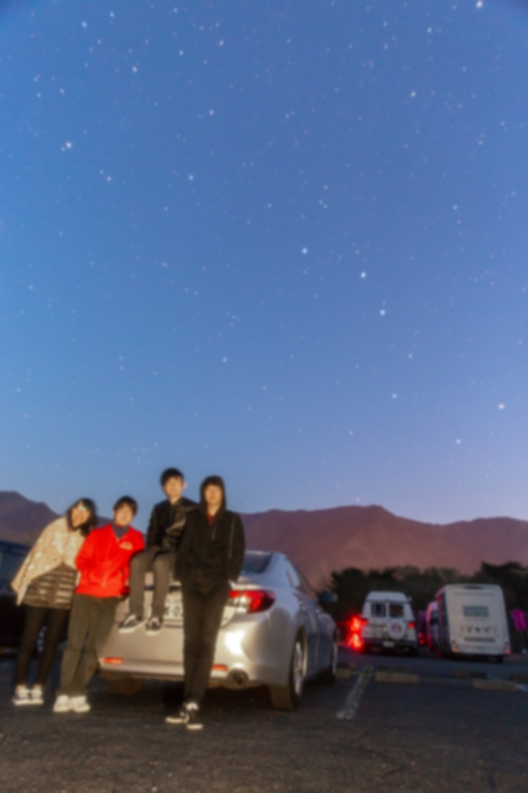</p>
<p>朝方に撮影した集合写真．過酷なスタンプ集めであった…．<br>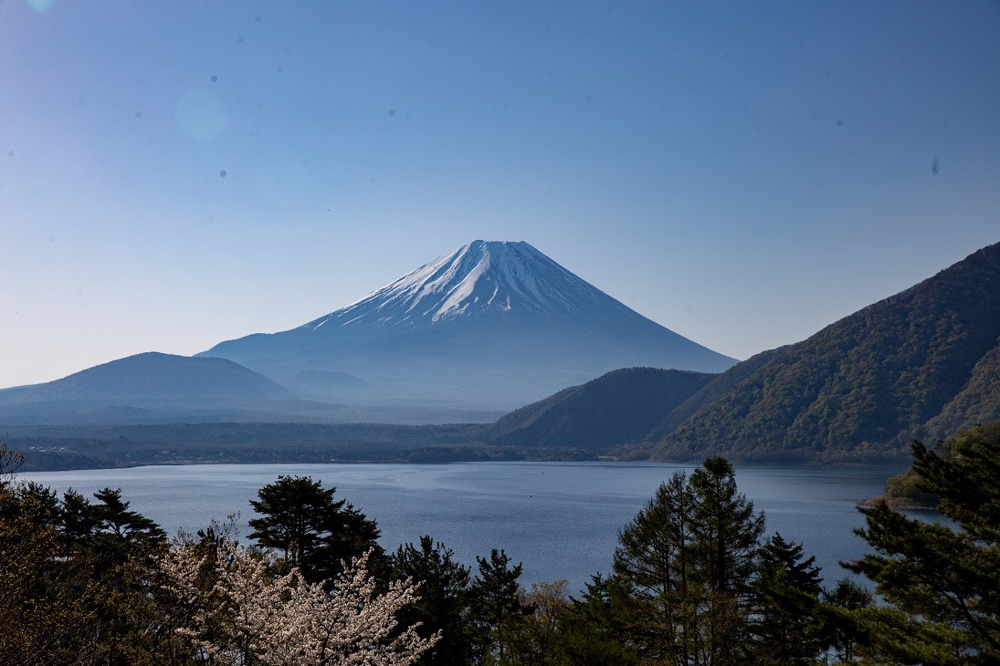</p>
<p>本栖湖からの千円札富士山！夜に来たら最高だと確信したのはこの時であった…．</p>
<h3 id="5-11-清里"><a href="#5-11-清里" class="headerlink" title="5/11 清里"></a>5/11 清里</h3><p>上記の朝霧に行くタイミングで，知り合いの星屑さんからR200SSを超破格で買い取り（本当にありがとうございました），その使用感の検証で，カメラアダプターや諸々を揃え，清里に行きました．結局，この時からR200SS使えてない…（理由は後述）．同期二人と，後輩一人の計四人です．夜はしっかりと晴れ，シーイングもなかなかの空．ただ，買い取ったR200SSは金属でできており，自分のEM-11だと追尾がとてもシビア…(たぶん搭載重量普通にアウトだと思う)．光軸もけっこうずれており，flickrなどに載せられるレベルのは撮れませんでした．デカイ，重い，まともに乗らないということで，この晩から撮影には使ってないのですが，せっかく人様から買い取っておいて（しかも格安で）使わないのはちょっとなー，ということで，眼視用として使おう使おうとは思っています．結局それも買わずに年末を迎えてしまいましたが．．来年はもっと使いたいなあ…．<br>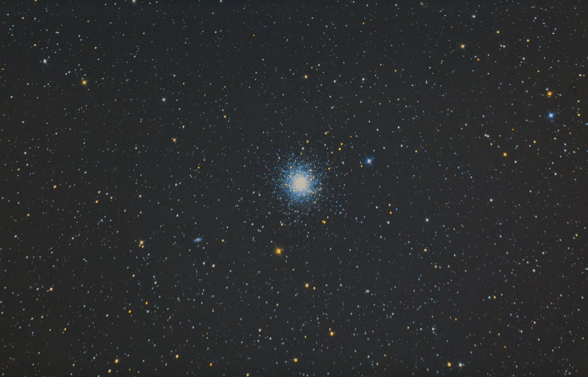</p>
<p>ちなみにこんなのが撮れましたよ（M13）．星の色が綺麗に出るのは反射のいいところですね～．（左下のちっちゃい銀河好き）</p>
<h3 id="5-22-岡山天体物理観測所"><a href="#5-22-岡山天体物理観測所" class="headerlink" title="5/22 岡山天体物理観測所"></a>5/22 岡山天体物理観測所</h3><p>観測ではなく，研究関連の用事で，岡山天体物理観測所でミーティング兼，当時設計途中のせいめい望遠鏡を見学しました．日帰りでしたが，実際の天文学者と多くのことを議論できて，とても良かったと思います．内部の写真は載せたら大変なことになる可能性があるので載せません．文章だけでお許しください．<br>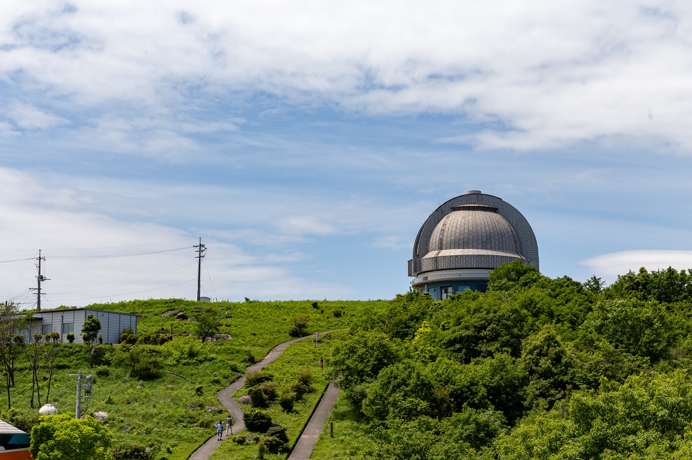</p>
<p>岡山天体物理観測所です．岡山初上陸．（追記:よく考えたら通過したことはあったので，初上陸ではありませんでした）<br>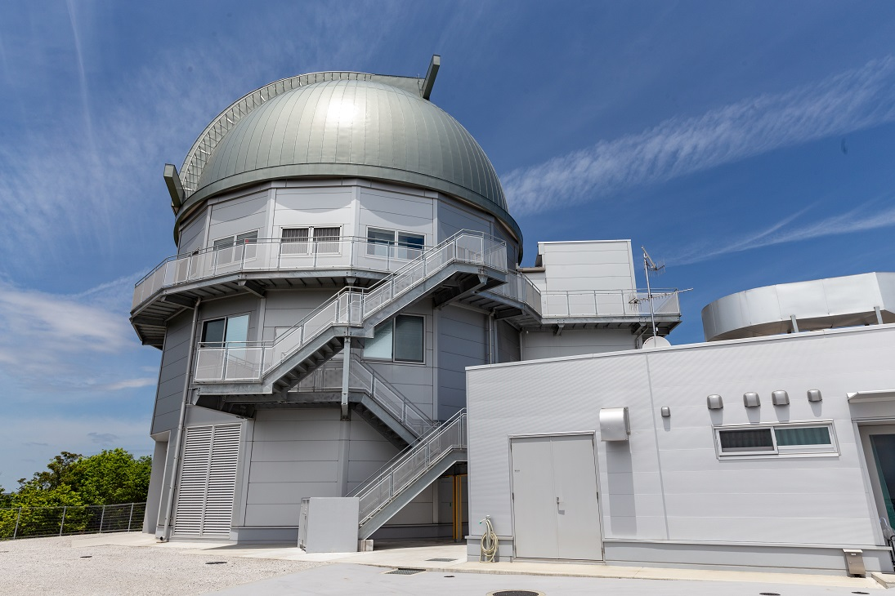</p>
<p>研究の関係で見学したせいめい望遠鏡です．もう完成していますが，当時はまだまだ建造途中といった感じでした．</p>
<h3 id="7-14-美ヶ原"><a href="#7-14-美ヶ原" class="headerlink" title="7/14 美ヶ原"></a>7/14 美ヶ原</h3><p>研究室でお世話になっている先輩とその家族の方々と一緒に，美ヶ原へ行きました．結果はどん曇り，いやー晴れると思ったんですが，今年の美ヶ原は本当に勝率が低かった（後編でも触れます）．朝方も長い間ずっと霧でしたが，夜が明けると晴れて結構きれいでした．美ヶ原は本気だすと乗鞍岳とはりあうレベルになると思っているので，来年も行きたいです．<br>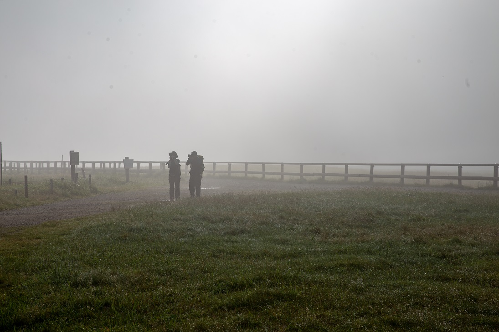</p>
<p>朝までずっとこんな感じ！まあこれもこれで幻想的ですよね．<br>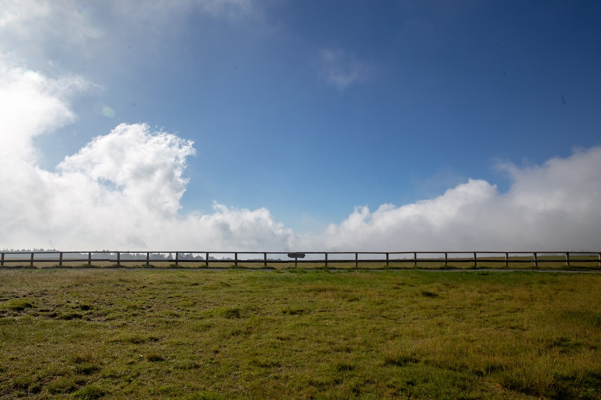</p>
<p>しばらくしたら青空も見えました．<br><br><br></p>
<p>注意:以下コメントになります．</p>
<p>りゅう:</p>
<blockquote>
<p>どうもです。昼でも夜でも、本栖湖の富士山全景を観れなかった者としては<br>風景写真のような景色が観れたのは羨ましいなと思うぐらいイイ写真ですね。</p>
</blockquote>
<p><br><br>astrodabo:</p>
<blockquote>
<p> りゅうさん<br>コメントどうもありがとうございます！<br>曇っていて見えないことも多いそうで、遠くからお越しになったりする場合はなかなか難しいところではありますね。次にお越しになるときには全景見えることを祈っております。</p>
</blockquote>

		
	</div>
	<footer class="article-footer">
		<a href="https://twitter.com/intent/tweet?text=2018%E5%B9%B4%E3%81%AE%E9%81%A0%E5%BE%81%E3%82%92%E6%8C%AF%E3%82%8A%E8%BF%94%E3%82%8B%E3%80%90%E5%89%8D%E7%B7%A8%E3%80%91｜%E3%81%BB%E3%81%97%E3%82%88%E3%81%BF%E5%A4%A7%E5%AD%A6%E7%94%9F%E3%81%AE%E3%83%96%E3%83%AD%E3%82%B0&url=http://dabokun.github.io/2018/12/31/00000002-review-outing-2018/" class="twitter-share-button" target="_blank" title="Twitter"></a>
		<script async src="https://platform.twitter.com/widgets.js" charset="utf-8"></script>
	</footer>
	<footer class="entry-footer">
		<div class="entry-meta-footer">
			<span class="category">
				
  <div class="article-category">
    <a class="article-category-link" href="/categories/expedition/">遠征記</a>
  </div>

			</span>
			<span class=" tags">
				
  <ul class="article-tag-list"><li class="article-tag-list-item"><a class="article-tag-list-link" href="/tags/photography/">写真</a></li><li class="article-tag-list-item"><a class="article-tag-list-link" href="/tags/astrophotography/">天体写真</a></li><li class="article-tag-list-item"><a class="article-tag-list-link" href="/tags/expedition/">遠征記</a></li></ul>

			</span>
		</div>
	</footer>
	
	
<nav id="article-nav">
  
    <a href="/2019/01/02/00000003-review-outing-2018-2/" id="article-nav-newer" class="article-nav-link-wrap">
      <strong class="article-nav-caption">Newer</strong>
      <div class="article-nav-title">
        
          2018年の遠征を振り返る【後編】
        
      </div>
    </a>
  
  
    <a href="/2018/12/28/00000001-astrophoto-and-processing/" id="article-nav-older" class="article-nav-link-wrap">
      <strong class="article-nav-caption">Older</strong>
      <div class="article-nav-title">
        
          天体写真とその処理過程について【前編】
        
      </div>
    </a>
  
</nav>

	
</article>


<section id="comments">
	<div id="disqus_thread">
		<noscript>Please enable JavaScript to view the <a href="//disqus.com/?ref_noscript">comments powered by
				Disqus.</a></noscript>
	</div>
</section>

    </div>
    <div class="mb-search">
  <form action="//google.com/search" method="get" accept-charset="utf-8">
    <input type="search" name="q" results="0" placeholder="Search">
    <input type="hidden" name="q" value="site:dabokun.github.io">
  </form>
</div>
<footer id="footer">
	<h1 class="footer-blog-title">
		<a href="/">ほしよみ大学生のブログ</a>
	</h1>
	<span class="copyright">
		&copy; 2019 astr0dab0<br>
		Modify from <a href="http://sanographix.github.io/tumblr/apollo/" target="_blank">Apollo</a> theme, designed by <a href="http://www.sanographix.net/" target="_blank">SANOGRAPHIX.NET</a><br>
		Powered by <a href="http://hexo.io/" target="_blank">Hexo</a>
	</span>
</footer>
    
<script>
  var disqus_shortname = 'astr0dab0';
  
  var disqus_url = 'http://dabokun.github.io/2018/12/31/00000002-review-outing-2018/';
  
  (function(){
    var dsq = document.createElement('script');
    dsq.type = 'text/javascript';
    dsq.async = true;
    dsq.src = '//go.disqus.com/embed.js';
    (document.getElementsByTagName('head')[0] || document.getElementsByTagName('body')[0]).appendChild(dsq);
  })();
</script>


<script src="//ajax.googleapis.com/ajax/libs/jquery/2.0.3/jquery.min.js"></script>


<link rel="stylesheet" href="/fancybox/jquery.fancybox.css" media="screen" type="text/css">
<script src="/fancybox/jquery.fancybox.pack.js"></script>


<script src="/js/script.js"></script>
  </div>
</body>
</html>